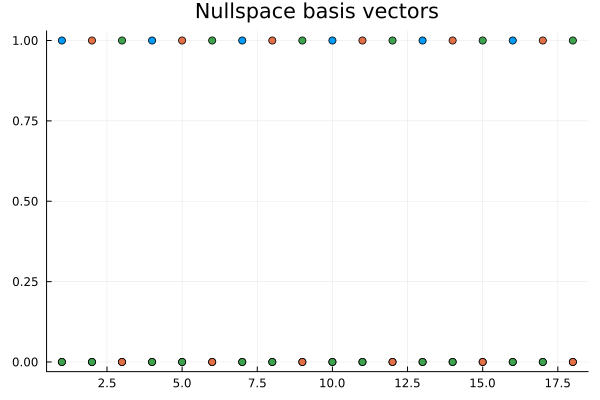

using CellularSheaves
using CliqueTrees.Multifrontal
using LinearAlgebra
using Plots
using SparseArraysF is a cellular sheaf
n = 6; stalk_dim = 3
F = EuclideanSheaf{Float64}(Int[])
for i in 1:n
add_vertex_stalk!(F, stalk_dim)
end
for i in 1:n
v1 = i
v2 = (i % n) + 1
rm = Matrix{Float64}(I, stalk_dim, stalk_dim)
add_sheaf_edge!(F, v1, v2, rm, rm)
endX is the Laplacian of F
C = sparse(coboundary_map(F))
X = C' * C18×18 SparseArrays.SparseMatrixCSC{Float64, Int64} with 162 stored entries:
⎡⣿⣿⣿⣀⡀⠀⠀⠸⠿⎤
⎢⠛⢻⣿⣿⣧⣤⠀⠀⠀⎥
⎢⠀⠈⠉⣿⣿⣿⣶⡆⠀⎥
⎢⣀⡀⠀⠀⠸⠿⣿⣿⣿⎥
⎣⠛⠃⠀⠀⠀⠀⠛⠛⠛⎦M is an LDLt factorization of X
\[ X = P^\mathsf{T} L D L^\mathsf{T} P\]
M = ldlt!(ChordalLDLt(X), RowMaximum())
L = M.L # lower triangular factor
D = M.D # diagonal factor
P = M.P # permutation
L18×18 FChordalTriangular{:U, :L, Float64, Int64} with 162 stored entries:
⎡⠷⢄⠀⠀⠀⠀⠀⠀⠀⎤
⎢⣤⣼⣷⣄⠀⠀⠀⠀⠀⎥
⎢⠉⠉⠉⠉⢱⣄⠀⠀⠀⎥
⎢⠛⢣⣤⣿⣿⣿⣷⣄⠀⎥
⎣⠒⠊⠉⠛⠛⠛⠛⠛⠓⎦V is a basis for the nullspace of X
max_abs_diag = maximum(i -> abs(D[i, i]), 1:size(D, 1); init=0.0)
tol = eps(Float64) * max(1.0, max_abs_diag)
ind = findall(i -> abs(D[i, i]) <= tol, 1:size(D, 1))
U = zeros(size(D, 1), length(ind))
for j in eachindex(ind)
U[ind[j], j] = 1
end
V = P \ (L' \ U)18×3 Matrix{Float64}:
1.0 0.0 0.0
0.0 1.0 0.0
0.0 0.0 1.0
1.0 0.0 0.0
0.0 1.0 0.0
0.0 0.0 1.0
1.0 0.0 0.0
0.0 1.0 0.0
0.0 0.0 1.0
1.0 0.0 0.0
0.0 1.0 0.0
0.0 0.0 1.0
1.0 0.0 0.0
0.0 1.0 0.0
0.0 0.0 1.0
1.0 0.0 0.0
0.0 1.0 0.0
0.0 0.0 1.0Visualize the nullspace basis: each column of V is plotted as a separate scatter series.
scatter(V, legend=false, title="Nullspace basis vectors")